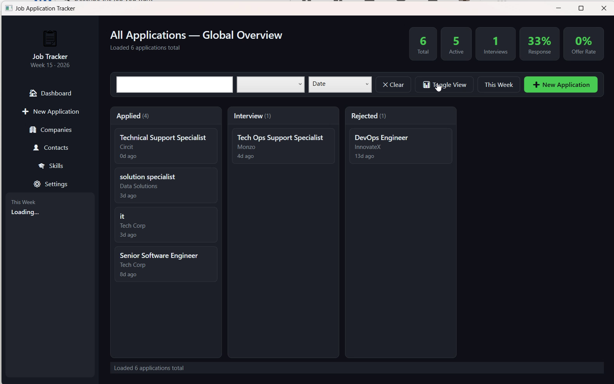
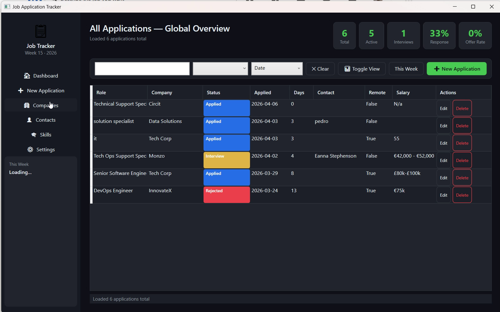
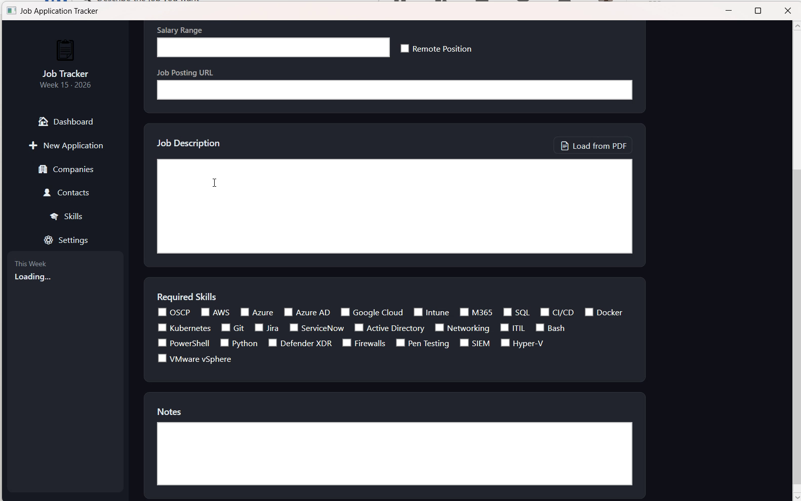

A .NET 8 WPF tracker with a Kanban board, Obsidian vault sync, and PDF extraction — all stored locally, no account required.


Move applications Applied → Interview → Offer, or flip to a sortable table — one click toggles the view.
Each application writes a structured markdown file to your vault — with a protected User Notes section that survives every re-sync.
Drop a job posting PDF and the app pulls the description and company name straight into a new application.
JobTracker.exe from the
Releases page,
double-click, and it creates your local database on first launch.
JobTracker is free, open-source, and built in spare time.
If it helps your job search, consider sponsoring to keep it going — every contribution helps fund new features and maintenance.
MIT licensed · Free forever · No account required to use